Skriven 30 dec. 2018
Senast redigerad {lastEdited}
Grundstenarna för säker lagring av användaruppgifter
{ord} ord, tar {min} min att läsa
Säkerhet är extremt viktigt, speciellt när det gäller lagring av personlig information. I början när webben var mer primitiv fanns det inte särskilt många som lagrade känslig information online, det fanns inte särskilt många som försökte komma åt känslig information online och därför var det inte många åtgärder som togs för att skydda känslig information online. Denna tid är nu förbi och här är några av de vanligaste och mest grundläggande åtgärder som tas för att skydda användaruppgifter online:
Kryptering av lösenord
Lösenord är den hemliga nyckeln till användares konton där deras användaruppgifter lagras, därför är det viktigt att lösenorden är väl beskyddade och svåråtkomliga. Nu för tiden vet de flesta hemsidor hur man bör lagra lösenord säkert, men det är inte något man kan ta för givet. T.ex. visade det sig att Adobe hade lagrat sina användares lösenord på ett väldigt osäkert sätt när deras databas läktes ut på internet 2013.
Det naiva sättet att lagra användares lösenord i en databas är att lagra lösenorden i klartext utan någon slags kryptering alls.
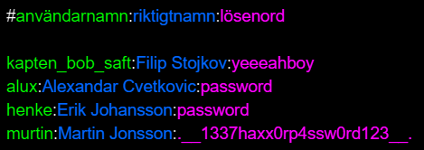I exempeldatabasen ovan lagras lösenorden bredvid användarnamnen i klartext, vilket innebär att den som har åtkomst till databasen kan logga in på vilken användares konto som helst. Detta är ett problem även om det är omöjligt för hackers att få tag på databasen eftersom just nu har administratörerna för hemsidan tillgång till lösenorden, vilket inte ens de ska ha. Ett lösenord är något personligt och ska därför inte vara lättillgängligt för någon annan än användaren själv.
Lösningen till detta är att man krypterar lösenorden innan man lagrar dem i databasen. På detta vis kan inte ens administratörerna för hemsidan komma åt användares lösenord... Åtminstone i teorin.
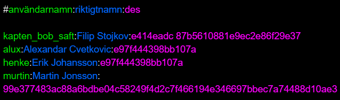I bilden ovan är lösenorden krypterade i DES (Data Encryption Standard) med nyckeln "DESPAIR", DES är en gammal och väldigt osäker krypteringsalgoritm. Ett väldigt stort och tydligt problem med DES är att längden inte är fast. Den varierar beroende på hur långt lösenordet är, vilket är ett problem eftersom man då har fått en ledtråd till vad lösenordet kan vara.
Det andra tydliga problemet vi märker med det här sättet att skydda lösenord är att likadana lösenord ser likadana ut även när de är krypterade. Alex och Eriks krypterade lösenord är identiska. Detta är problematiskt eftersom man kan då med hjälp av information som t.ex. lösenordsledtrådar från flera olika användare med samma lösenord lista ut vad lösenordet är.
Det går att fixa längdproblemet genom att använda en så kallad hashfunktion. En hashfunktion är en funktion som tar en bit text av varierande längd och producerar ett unikt hash av bestämd längd. Hashfunktioner är väldigt enkla för en dator att köra framåt (text -> hash) men är väldigt krångliga för datorer att köra baklänges (hash -> text).
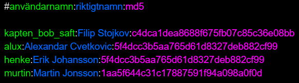Här har lösenorden krypterats med hjälp av MD5 (Message-Digest algorithm 5) vilket användes förr för att kryptera lösenord men har sedan länge varit för svag på grund av att datorers hastigheter har ökat så mycket att de nu kan knäcka MD5 utan problem. MD5 används i exemplet ovan eftersom det producerar ett kort hash för att få plats i bilden.
Det finns en mängd olika hashalgoritmer som t.ex. SHA-1, SHA-256 och BLAKE2. SHA-1 användes fram tills relativt nyligen då den knäcktes, vilket ledde till att man fick migrera till SHA-256 som idag är den rekommenderade hashalgoritmen. Detta förändras hela tiden och när datorer blir mer kraftfulla måste säkrare algoritmer skapas.
Ett problem som dyker upp när man använder sig av vanliga krypteringsalgoritmer som MD5 och SHA-1 är att även fast det inte går att köra dem baklänges går det att köra dem framåt för alla möjliga kombinationer av karaktärer och spara de resulterande hashen. Det går på så sätt att skapa ett uppslagsverk som berättar vilket hash som skapas av vilken kombination karaktärer. Detta är varför unika lösenord är väldigt viktiga eftersom det finns en större chans att ditt lösenord inte finns med i ett sånt här uppslagsverk om det är unikt till dig.
Men längdproblemet har nu lösts eftersom alla krypterade lösenord kommer att ha samma längd tack vare hashfunktionen, men problemet att likadana lösenord är fortfarande likadana krypterade kvarstår.
Detta löser man genom att använda sig av så kallat "salt". Ett salt är en slumpmässigt genererad sträng med karaktärer som blandas in med lösenordet innan det går igenom hashfunktionen för att göra hashet unikt. Det kallas salt eftersom det fungerar som krydda till lösenordet. Salt kallas ibland för nonce vilket är en förkortning för number used once, det kallas för nonce eftersom det ska vara något slumpmässigt och unikt för varje lösenord som det används med.
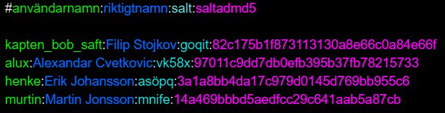Här är varje lösenordshash unikt även ifall lösenorden är identiska tack vare att de är saltade. Saltet är inget hemligt utan kan lagras bredvid det hashade lösenordet i databasen.
Problemet med uppslagsverken kvarstår dock. Nu - tack vare att lösenorden är saltade - finns det inget färdiggjort uppslagsverk online som går att använda för att få reda på lösenorden, men med tillräckligt med tid kan man genom att räkna med saltet generera ett uppslagsverk till dessa lösenord.
För att lösa detta problem kör man helt enkelt sin hashalgoritm flera gånger. Man börjar med lösenordet och saltet och tar sedan hashet man får från dem tillsammans med samma salt för att generera ännu ett nytt hash, sedan fortsätter man så här flera tusentals gånger. Detta förvränger hashet så mycket att det krävs oerhört mycket mer processorkraft för att kunna generera ett uppslagsverk.
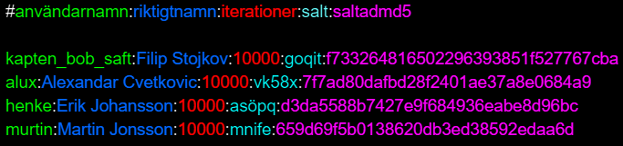Detta är hur det slutgiltiga säkra databasexemplet ser ut. Nu skulle det krävas en enorm mängd processorkraft för att ta reda på vad lösenorden egentligen är. Det är även enkelt att göra krypteringen starkare när datorer blir snabbare, allt man behöver göra är att öka numret från 10.000 till ett högre nummer.
Nu kanske du undrar hur det är meningen att man ska kunna kolla ifall en användare som loggar in använder rätt lösenord om man själv inte vet vad lösenordet är, för det är ju omöjligt för servern att veta vad lösenordet egentligen är.
Jo, allt man behöver göra är ta det lösenord som använder försöker logga in med och köra det tillsammans med saltet från databasen igenom 10.000 iterationer (varv) av hashfunktionen för att sedan få ett hash. Man kan sedan jämföra och se ifall detta hash är samma som är lagrat i databasen och ifall det är det kan användaren få logga in.
Det är enkelt.
HTTPS och SSL
HTTPS (Hyper Text Transfer Protocol Secure) är en säker version av det vanliga protokollet som webbsidor använder sig av för att skicka och ta emot data till och från klienter: HTTP. Till skillnad från vanlig HTTP krypteras all data som skickas över HTTPS vilket betyder att ifall någon skulle få tag i datapaketen som skickas mellan klienten och servern skulle de ändå inte kunna komma åt datan inuti dem.
Krypteringen som används i HTTPS är SSL (Secure Sockets Layer) vilket är en form av asymmetrisk kryptering, som innebär att den använder sig av två nycklar: en privat och en publik.
De komponenter som krävs för SSL är följande: ett protokoll som kan användas för kommunikation (SSL), ett certifikat för att verifiera identitet och en tredje part som kan gå i god för certifikathavaren.
De som agerar som tredje part kallas för certifikatauktoriteter och de är ansvariga för att validera att de hemsidor som ansöker om SSL-certifikat är legitima. Det är tack vare litade certifikatauktoriteter kan webbläsaren verifiera ifall SSL-certifikatet som en server skickar till dem går att lita på eller inte.
Ifall ett certifikat inte är verifierat med någon litad certifikatauktoritet kommer webbläsaren att varna användaren genom att visa ett rött upplåst lås i addressfältet. I äldre versioner av webbläsare brukade detta hänglås dyka upp som grönt när certifikatet gick att validera, men nu för tiden tar webbläsare för givet att alla hemsidor där klienter skriver in och skickar information till servern ska vara säkrade över HTTPS och därför är de nu för tiden gråa.
Som exempel är denna hemsidan validerad med ett giltigt SSL-certifikat. Ifall du vill ta en titt på hur det ser ut kan du göra så här:
1. Tryck på låset uppe i vänstra delen av addressfältet.
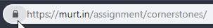2. Tryck på "Certifikat".
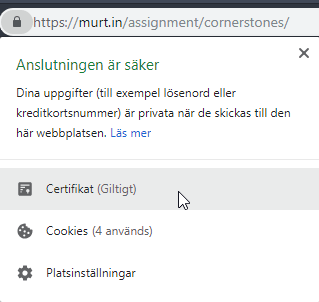Här kan du nu se SSL-certifikatet:
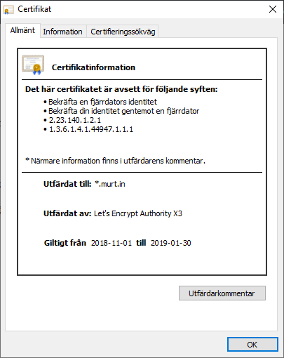Datavalidering och skydd från XSS
Ett ofta bortglömt säkerhetsproblem är användarens input. Den gyllene regeln när det kommer till användares input är att man aldrig ska lita på att de skriver in det du förväntar dig. Du ska alltid validera användares input.
Användare kan lätt få din server att köra deras kod ifall du inte är noggrann med vad du låter dem skicka till servern. Detta kallas för Cross Site Scripting och förkortas XSS.
Ett vanligt exempel på XSS är den typiska SQL-injektionsattacken som bygger på utnyttjning av en webbsidas SQL-databas.
Här ser du ett exempel på hur koden till ett inloggningssystem skulle kunna se ut:
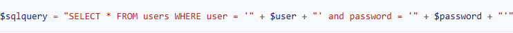Ifall användaren skriver in namnet "anna" och lösenordet "abc123" kommer SQL-satsen att se ut så här:
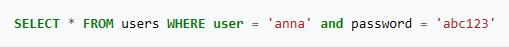Än så länge finns det inga problem eftersom användaren skrev in precis det vi förväntade oss. Ifall en användare istället för ett lösenord skriver ' OR '' = ' kan de förändra hur SQL-satsen är uppbyggd, eftersom de använder sig av samma karaktärer som används i SQL.
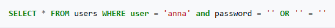
Nu kommer den här satsen alltid låta användaren logga in, eftersom den inte längre kollar efter rätt lösenord, utan nu kollar den istället efter
ifall '' = '', vilket det alltid gör, som betyder att användaren nu kan logga in på vilket konto de vill utan att kunna lösenordet.
Detta löser man genom att "sanera" användarens input. Detta betyder att man går igenom och "escape-ar" texten, som man säger på engelska.
Det man gör är att man t.ex. tar bort apostrofer och citattecken och ersätter dem med speciella koder. T.ex. ersätter man karaktären "
med " och & med &.
Samma problem dyker upp när man låter användare ladda upp filer till servern, för att t.ex. byta profilbild eller ladda upp ett CV. En användare skulle kunna ladda upp en fil med farlig kod som sedan körs på servern, vilket är katastrofalt för säkerheten av användarna.
Detta löser man på samma sätt, fast det är lite mer avancerat. Man kan börja med att begränsa vilka filtyper som får laddas upp och sedan kan man sätta storleksbegränsningar på filerna. Det är också bra att skanna igenom filerna för att kolla efter bitar av kod och ifall någon hittas så tillåts inte filen att laddas upp.
Det finns även andra typer av XSS men dessa två är de enklaste.
Lagar
Användaruppgifter online behandlades före 25 maj 2018 av personuppgiftslagen, men nu är det den ökända GDPR (General Data Protection Regulation) - eller som den heter på svenska: Dataskyddsförordningen.
Den nya dataskyddsförordningen skapades för att skydda användares uppgifter online och har därmed fört med sig en mängd nya krav på webbsidor. Ifall en hemsida inte följer dataskyddsförordningen kan ägaren av hemsidan få betala upp till 20 miljoner euro i böter till EU, därför är det viktigt att inte göra det fel.
Ett enkelt sätt att förenkla dataskyddsförordningen ner till en gyllene regel är att tänka att användarna av hemsidan ska få acceptera alla villkor och funktioner, de ska inte behöva tacka nej till dem utan de bör inte aktiveras förrän användaren accepterat dem.
Den tydligaste förändringen dataskyddsförordningen förde med sig till webbsidor online är att de nu måste notifiera användare att de använder sig av så kallade "kakor" för att lagra information i webbläsaren. Detta måste göras eftersom kakor räknas i dataskyddsförordningen som personlig information. Innan dataskyddsförordningen kunde hemsidor implicera att användarna accepterar kakorna, men det är inte längre tillåtet och därför skapades notifieringarna.
Det är också nu viktigt för hemsidor att skapa policys angående all personlig information som lagras på hemsidan. Detta inkluderar kakor men även tredjepartsfunktioner som Google Analytics, i vilket fall man endast behöver länka till
Googles policy
.I sin integritetspolicy är det nu viktigare än någonsin att förklara tydligt hur man samlar in och lagrar användares information och även hur och var användaren kan få tillgång till sin egen data och kunna ta bort den från servern.
Det rekommenderas även att man använder en förhöjd nivå av säkerhet på hemsidor i form av HTTPS och SSL, eftersom man då kan skydda sina användares uppgifter mycket bättre.
Man ska även vara väldigt noga med att inte lagra någon information som inte nödvändigtvis behöver lagras. Ifall man av någon anledning behöver skriva ut en användares information på papper finns det krav på att det inte får lagras och att det måste strimlas, inte slängas på vanligt sätt.
Dataskyddsförordningen för även med sig något många användare klagat på väldigt länge: hemsidor får inte längre kryssa i rutor automatiskt när användare
fyller i formulär på en hemsida. Detta innebär att rutan där det står Använd Bing™ som standardsökmotor måste manuellt klickas i av användaren.
Hemsidor får inte heller "bunta ihop" flera olika saker i en kryssruta. Detta innebär att en ruta i ett formulär som löd Acceptera användarvillkoren och
använd Bing™ som standardsökmotor inte längre är tillåtet. Användaren måste få välja varje del själv.
Om du följer alla regler ovan bör du inte ha några problem med dataskyddsförordningen. Enkelt!